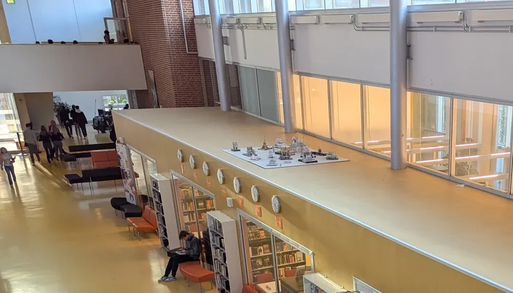

Insändare

Vad hände med pappersstaden?
Den senaste veckan har jag märkt att de små pappersbyggnaderna som brukar ligga på biblioteket är borta och jag har ingen aning var de har tagit vägen. Det jag hoppas på är att de har tagits ner för att repareras och rätas ut då många av dem hade börjat svikta och se illa däran ut (utöver det lutande tornet i Pisa). Men det är bara en gissning, det kan vara så att den har tagits ner för att slängas för att den har varit där uppe länge. Om detta är vad som har hänt så skulle det vara en tragedi, då trots att den var lite tilltufsad fortfarande bröt upp den homogena och tråkiga trä taket man behöver se varje gång man går på den 4:e våningen. Och om den verkligen ska bort byt ut den mot något nytt och intressant och kolla på. Jag har själv lite idéer för vad som kan stå där.
- En målning på ett russin/ skål med russin i renisans stil. (Ni har säkert flera målares kontaktinformation med tanke på hur vi kan byta ut målningarna på väggarna ganska ofta)
- En staty på vår före detta rektor för att komma ihåg hans Dåd på vårt gymnasium. (helst gjort av någon metall)
- En ny pluggsal/ pluggsalar ( Då alla verka vara upptagna när man verkligen behöver dem)
- etcetera, etcetera. Kom gärna med egna ideer och berätta om dem på nästa elevråd så vi kan göra skolan ännu lite bättre.
Tack för er uppmärksamhet och för att ni läser denna tidning.